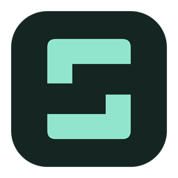
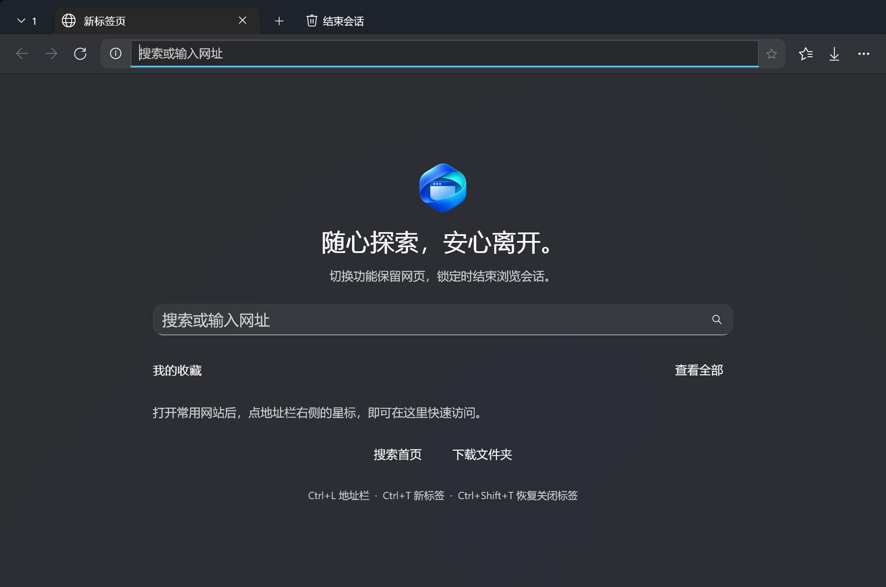

标签再多，也能找到
搜索已打开的标签，恢复刚关掉的页面。切去媒体库再回来，继续之前的浏览。
Ctrl + Shift + A
Stealth为 WINDOWS 而作
打开网页，接着看图，随手收藏。
原生 Windows 体验，自己的媒体空间。
Windows 11 · x64 / ARM64 · 独立项目
少一点打断
从第一张标签到最后一张图片，把浏览中反复用到的动作放在手边。

搜索已打开的标签，恢复刚关掉的页面。切去媒体库再回来，继续之前的浏览。
Ctrl + Shift + A所有标签共享下载列表。暂停、继续、定位文件，不用寻找最初的网页。
空标签按需启动内核，后台页面尝试休眠。音频、下载和全屏页面保持工作。
图片，不必一张张重新打开
网页与本地图片都能连续浏览。长图适应宽度，细节随时放大；退出网页阅读器，回到原来的位置。
离线也有自己的空间
将图片、视频和音频导入加密媒体库。按需解密读取，搜索、筛选，再继续观看。

网页使用独立临时配置。结束会话时尝试清理；崩溃或文件占用可能使清理延迟。收藏保存在本机设置中。
导入保险箱的媒体分块加密。普通下载仍是普通文件，不会自动进入保险箱，也不会随会话结束删除。
Stealth 不隐藏 IP，不能防御恶意软件或管理员。当前备份依赖原 Windows 用户，不保证重装或换机恢复。
几步就能开始
Intel / AMD 选择 x64；Windows on Arm 选择 ARM64。系统信息里可以确认。
放到固定目录，打开 StealthWorkspace.exe。按包内说明创建桌面入口。
创建保险箱密码后进入浏览器。用非重要文件先体验媒体导入、导出和备份检查。
STEALTH FOR WINDOWS
当前提供未签名预览版。Windows 可能显示 SmartScreen 提示，请自行判断信任，不要关闭系统保护。
需要 Microsoft Edge WebView2 Runtime。版本说明与 SHA-256 校验值随 Release 提供。
不是。Stealth 是独立项目，使用 Microsoft 的 WinUI 3 和 WebView2 技术构建，不代表 Microsoft 提供或背书。
不做这样的承诺。应用优化了空标签启动、后台资源和交互流程；网络、站点资源与安全验证仍会影响速度。部分网站可能限制嵌入式浏览器。
当前备份依赖原 Windows 用户的 DPAPI，重装系统或换机后可能无法恢复。重要原始文件请另行备份，不能仅依赖应用内备份。
先看故障排查，再到 GitHub Issues 提交版本、系统和复现步骤。请勿上传密码、保险箱、Cookie 或未经审阅的日志。